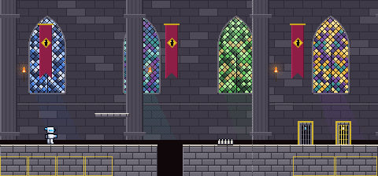
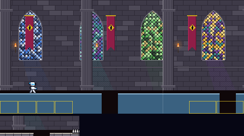
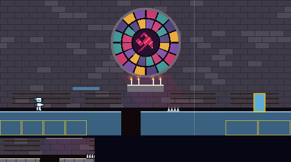
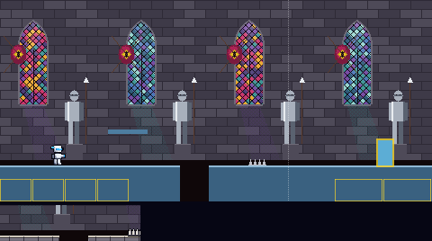
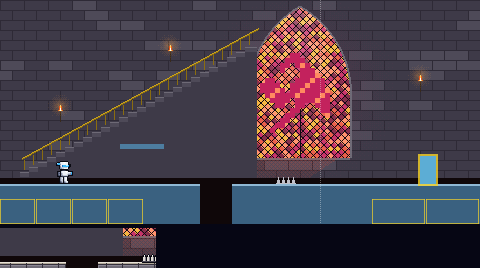
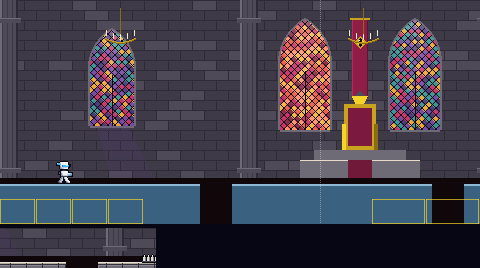
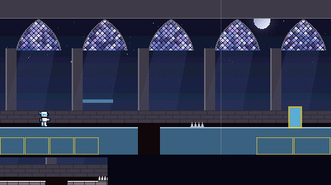
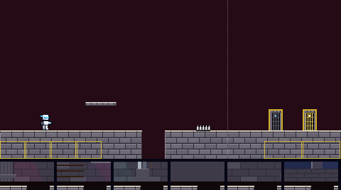

The way to Drake Man's door. Six backdrops, all built from his colours, in front of the castle bricks picked in the first round. Batch 3 of 3.
Picked by the owner on 9 Nov 2026: "Dragon great Hall is good". In the game since the same day.
The windows went through a few rounds the same day. They ended as five windows with nothing in the middle, all on one diamond grid: yellow (the reference), red (the yellow one with its yellows swapped for reds), green and blue (kept clear of the Draco-Blaster's teal, violet and indigo), and the "dragon" window in the Draco-Blaster's colours. They come down the hall in a shuffled order that never repeats a window back to back.
The great hall behind the castle bricks, as the game draws it, with the player standing still. The boss door is on the left, the exit door on the right. The torches flicker; the hall scrolls in two layers.

Each is shown behind today's plain pieces, so only the backdrop changes. The strip under it is its pit edge with the castle bricks in front. The two marked MOVING scroll in layers, the far ones slower; their pictures move.






Picked in the first round. It shows the floor with a pit, a platform, spikes, the boss door (left) and the exit door (right), in front of today's flat colour. The strip under it is its pit edge against backdrops 1 to 6. The contrast numbers are the worst against any of the six; the game asks at least 2 for the ground, 4.5 for its lit edge and 4.5 for the white player on it.
